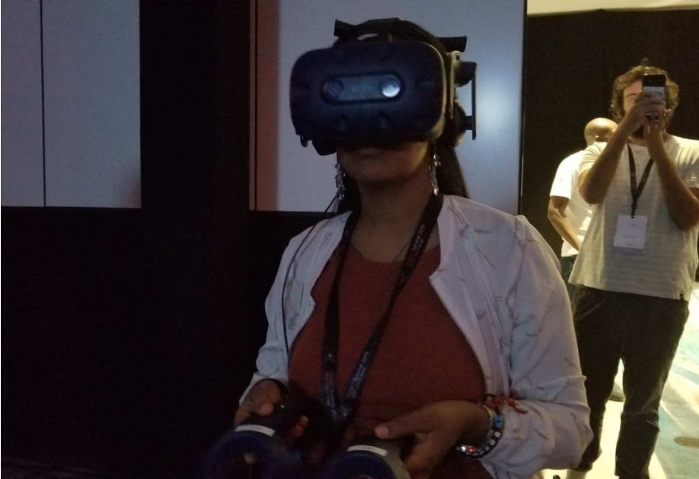

Who is Yenatfanta?
An AI Researcher, Data Scientist and Engineer who has spent more than 15 years leveraging data and AI to drive innovation and business growth. Skilled in crafting and implementing data-driven solutions, from data ingestion and cleaning to advanced modeling and deployment. Proficient in a wide range of data science tools and techniques, including Python, R, SQL, and machine learning frameworks like TensorFlow. Adept at building robust data pipelines, conducting in-depth data analysis, and creating insightful visualizations. Experienced in leveraging AWS to build scalable and cost-effective data solutions. Passionate about pushing the boundaries of AI and machine learning to drive positive impact.
Today my focus is AGI research at SingularityNET, including cognitive architectures and automated theorem proving.
Skills
AGI and formal methods
OpenCog, AtomSpace, MOSES, Hyperon, MeTTa, Lean 4, Vampire
Programming and software
Python, R, SQL, Bash, Git, REST APIs, PyTest, GoTest, CI/CD
AI and machine learning
Deep Learning, NLP, LLMs, Computer Vision, TensorFlow, RASA, AWS SageMaker
Data engineering
ETL, BigQuery, PostgreSQL, dbt, Trino
Cloud and DevOps
AWS, Docker, Kubernetes, Prometheus, Grafana
Visualization
Power BI, Google Data Studio, QuickSight, R Shiny
Education
M.Sc. Computer Engineering
Addis Ababa Institute of Technology, Addis Ababa University
B.Sc. Electrical Engineering
Jimma University
Certifications
AWS Certified Cloud Practitioner
Kubernetes
DevOps Fundamentals
Prompt Engineering
Database Systems
Leadership Development
Leadership
Ambassador
Women in Data Science (WiDS) Ethiopia
Poster judge
Deep Learning Indaba
Team advisor
Women-focused AI hackathon
How I work
Project management
Agile delivery
Collaboration
Cross-functional teams and stakeholder communication
Mentorship
Coaching and technical knowledge sharing
Tools
Jira, Confluence, Microsoft Teams, Slack, Mattermost, Medium
Community
Mothers and children
Volunteer providing food and clothes for vulnerable families
Girls in STEM
Advisor for women-focused hackathons
Scholarships and grants
Competitive research visit scholarships and conference grants awarded by: